Guía de marca · v2 · noviembre 20268 hace el trámite. No ve tus datos.
Visa y Google resolvieron cómo paga un agente. Priv8 resuelve qué ve mientras trabaja. Esta guía recoge el nombre, el logo, el personaje 8, el color, la tipografía y la voz de la marca.
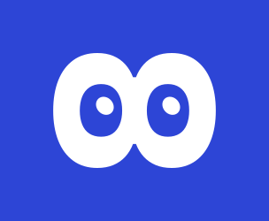
Tres nombres, cada uno con su papel
La marca y el producto son Priv8. Priv8 CUA es el protocolo sobre el que funciona. El agente que el usuario ve y oye es 8.
"Priv" y el 8 en inglés, eight: priv-eight. La marca y el producto. Es el nombre que se usa siempre que se habla de lo que hacemos. Una palabra, P mayúscula, el 8 siempre en cifra.
El protocolo sobre el que funciona Priv8, para quien lo integra: bancos, brokers y equipos técnicos. CUA son las siglas de computer-use agent y se deletrean. Va separado, en mayúsculas.
El agente: los ojos del logo. Siempre se escribe con la cifra, nunca "Ocho" ni "Eight" en el texto. En español se dice "Ocho".
Visa y Google resolvieron cómo paga un agente. Priv8 resuelve qué ve mientras trabaja.
El 8 de Sora, tumbado, con ojos
El símbolo es el 8 de Sora 700 con su anillo inferior reflejado arriba, para que los dos huecos sean iguales, girado 90°. Los huecos son los ojos y las pupilas miran un poco arriba a la derecha: es 8 en reposo. Todos los archivos son trazados, sin depender de la fuente.

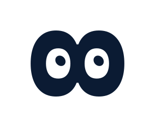

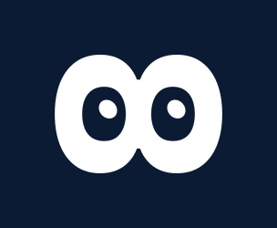

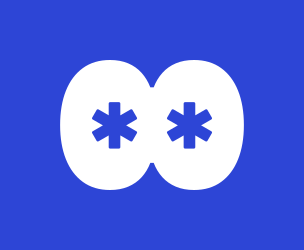

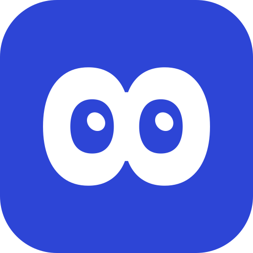

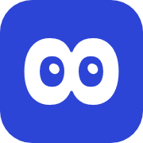
Combinaciones con el nombre
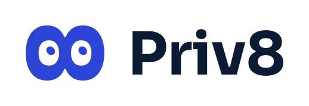



En fondo claro, el 8 va en Cobalto, "Priv8" en Noche y "CUA" en Cobalto. En fondo oscuro, el 8 y "Priv8" en blanco y "CUA" en Cobalto claro. "Priv8" va en Sora 700; "CUA" en Sora 600 con un poco más de espacio entre letras. El logotipo de la marca es "8 + Priv8". "8 + Priv8 CUA" solo cuando se habla del protocolo, por ejemplo en documentación técnica o con quien lo integra. Sobre Cobalto, usa la versión para fondo oscuro de "8 + Priv8".
Espacio libre
x = la altura de un ojo de 8. Ese margen queda libre en los cuatro lados. Los archivos ya lo incluyen: colócalos sin recortar.
Tamaño mínimo
Medidas del archivo con su margen. En impresión: 8 a 6 mm, Priv8 CUA a 30 mm. Por debajo, las pupilas se pierden: usa el icono o el texto solo.
Lo que no se hace
Deformar o estirar.
Ponerlo de pie: 8 siempre está tumbado.
Fondos sin contraste o colores fuera de la paleta.
Sombras, brillos, contornos, manos, vendas o adornos.
Archivos

currentColor, para incrustar.
8-nove.svgNo ve, en 
currentColor.
8-nove-blanco.svg · 8-nove-noche.svgNo ve en las otras dos combinaciones.
favicon.svgIcono con el 8 más grande, para pestañas.
icono-app-cuadrado.svg · apple-touch-icon.pngSin esquinas, para sistemas que recortan el icono.
icono-app-{16,32,48,180,192,512}.pngIcono redondeado en PNG con transparencia.


8 es el agente, y solo tiene ojos
8 expresa todo con las pupilas, los párpados, el tamaño y la inclinación. Se mueve con muelles amortiguados y la cabeza sigue a la mirada con un poco de retraso. No tiene manos ni venda, y no lleva adornos: ni corazones, ni lágrimas, ni gotas, ni espirales, ni rubor. Lo único que se añade son las "z" en Sora, en minúscula, cuando está inactivo.
Ve
Ojos abiertos. Interfaz: menús, botones, textos.
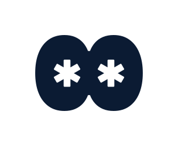
Tokenizado
Lo tiene, pero tapado: cada ojo se cierra en un asterisco. Trabaja con ‹IBAN_1› sin ver el valor.
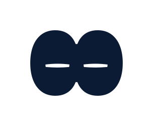
Nunca sale
Ni lo mira: cierra los ojos como al parpadear y se queda así. Contraseñas, PIN y códigos los pone el usuario.
La cara cuenta lo que 8 puede hacer con el dato: verlo, tenerlo tapado o ni mirarlo. La interfaz lo acompaña con el chip del token o la etiqueta nunca sale.
Emociones
Flujo del trámite
Parpadeo
Como un ojo real: la abertura se estrecha en almendra desde las esquinas y se cierra en una línea algo por debajo del centro. Cierra en 70 ms, se queda cerrado 30 ms y abre en 160 ms. Parte siempre de la pose de la emoción, así que nunca deja trozos del hueco. Al abrir, cada 2 a 5 s, a veces doble. No parpadea cuando los ojos ya están cerrados o tienen una forma fija: risa, inactivo, no ve.
Tamaño pequeño
De 32 px en adelante se distinguen todas las caras. Por debajo, quieto, solo se distinguen las que cambian de forma: alegría, risa y listo (arcos), tristeza y enfado (párpados inclinados), duda, mirar a otro lado, no ve e inactivo. Las demás se reconocen por su movimiento, así que a 24 px 8 siempre va animado.
Expresiones a medida
Si ningún estado encaja, el agente puede crear una cara con un JSON: postura (mirada, párpados, ceño, sonrisa, pupilas, inclinación) y hasta cuatro movimientos. El motor recorta los valores a su rango e ignora cualquier otra cosa, así que nunca hay adornos, colores ni texto en los ojos. Esquema en brand/8/expresion.schema.json; taller para probarlas en docs/ojos.html. Se usan con mesura: primero el juego cerrado.
docs/ojos.html.Cobalto, el color de Priv8
Priv8 es Cobalto: es el fondo de la marca, del icono y de 8. El azul es el color que más se asocia a banca y seguridad, y un Cobalto intenso lo hace propio y actual. El Noche, casi negro, da el contraste para el texto. Los colores de estado solo se usan para hablar de datos.
#2D45D6 · --p8-cobaltoColor principal. Portadas, icono, fondo de 8, acción principal y enlaces.#0B1B33 · --p8-nocheTexto principal y fondos oscuros, como la consola.#8FA2FF · --p8-cobalto-claroCobalto sobre fondo oscuro. Nunca sobre blanco.#EEF2F8 · --p8-nieblaFondos y superficies.#5A6478 · --p8-pizarraTexto secundario sobre claro.#1F8A5B · --p8-seguroVerde: libre, 8 lo ve.#A86400 · --p8-avisoÁmbar: se tokeniza.#C23A2E · --p8-bloqueoRojo: nunca sale.Proporción de uso
Piezas de marca (portadas, diapositivas, icono, redes): fondo Cobalto, con 8 y el texto en blanco.
Interfaces (app, banca, PDF): fondo Niebla y blanco para leer cómodo, Cobalto en 8, la cabecera y la acción principal, Noche en el texto. Una sola acción en Cobalto por pantalla.
Contraste (WCAG 2.2, nivel AA)
AA pide 4,5:1 para texto normal y 3:1 para texto grande (24 px, o 18,7 px en negrita) y para iconos y bordes.
| Texto sobre fondo | Ratio | Texto normal |
|---|---|---|
AaNoche sobre blanco | 17,2:1 | Pasa |
AaNoche sobre Niebla | 15,3:1 | Pasa |
AaBlanco sobre Cobalto | 7,2:1 | Pasa |
AaCobalto sobre Niebla | 6,4:1 | Pasa |
AaCobalto claro sobre Noche | 7,2:1 | Pasa |
AaPizarra sobre blanco | 6,0:1 | Pasa |
AaToken sobre su fondo | 7,7:1 | Pasa |
AaBloqueado sobre blanco | 5,3:1 | Pasa |
AaAviso sobre blanco | 4,7:1 | Pasa |
AaSeguro sobre blanco | 4,3:1 | No pasa |
AaSeguro sobre su fondo suave | 3,7:1 | No pasa |
AaTexto Seguro #18734C sobre suave | 5,0:1 | Pasa |
AaCobalto claro sobre blanco | 2,4:1 | No pasa |
AaPizarra sobre Noche | 2,9:1 | No pasa |
AaCobalto sobre Noche | 2,4:1 | No pasa |
Por eso los colores de estado tienen una versión de texto más oscura (--p8-seguro-texto #18734C, --p8-aviso-texto #8A5200, --p8-bloqueo-texto #A83228) que pasa AA sobre su fondo suave y sobre blanco. El color base queda para puntos, bordes e iconos. En modo oscuro: texto #E9EEF7 sobre #0F1D33 (14,5:1), secundario #9DA8BC (7,0:1) y acción #8FA2FF (7,1:1).
Verde, ámbar y rojo
Cada dato de la pantalla tiene una clase. La interfaz la enseña con un chip o una etiqueta; 8 solo dice si lo ve o no. El color nunca va solo: siempre lo acompaña un texto o la forma del token.
8 lo ve
Interfaz: menús, botones, títulos y textos sin datos personales.
Sin marca en la interfaz. En la consola, etiqueta enviado.
8 ve un token
IBAN, DNI, nombres, importes y movimientos. Al modelo le llega el token; el valor se queda en el dispositivo.
Chip de token. El usuario ve el valor real, rehidratado en local.
8 no lo ve
Contraseñas, PIN, logins, códigos de un solo uso y tarjeta completa. No se tokeniza: no sale.
Etiqueta "nunca sale". 8 mira a otro lado mientras se escribe.
Tres familias, cada una con su trabajo
Las tres son de Google Fonts y de uso libre (SIL Open Font License). IBM Plex aporta rigor; Sora, el toque actual de los titulares y del logo.
Pesos 600 y 700. Titulares, logo, cifras grandes y las "z" de 8.
Pesos 400 a 600. Todo el texto de lectura, botones y formularios.
Pesos 400 y 600. Tokens, datos técnicos, etiquetas y la consola.
Display · 48/52
Sora 700 · −0,02emTus datos no salen.H1 · 36/40
Sora 7008 hace el trámiteH2 · 28/32
Sora 700El agente no ve tu saldoH3 · 18/24
Sora 600Protocolo de privacidad para agentesTexto · 16/25
Plex Sans 400Cada dato sensible se sustituye por un token antes de llegar al modelo.Pequeño · 14/20
Plex Sans 400Saldrá hacia el proveedor del modelo durante esta sesión.Token · 14
Plex Mono 600‹IMPORTE_1-positivo›Etiqueta · 12
Plex Mono 600 · +0,12emAuditoría · paso 4Cifras en Plex Sans con font-variant-numeric: tabular-nums en tablas y saldos. Formato español: 3.420,15 €. Sin mayúsculas sostenidas en frases; solo en etiquetas cortas en Plex Mono.
El chip de token
Es el elemento más reconocible de la marca: enseña, en la misma línea que el texto, que un dato está ahí pero el agente no lo ve.
Así sí
Tienes ‹SALDO_1› en ‹IBAN_1-propio›.
Un solo color para todos los tokens, sea cual sea el tipo. El token no se trunca ni se abrevia.
Accesibilidad
Los lectores de pantalla leen el token como "dato protegido, IBAN 1": usa aria-label y no dejes que lean las comillas. Para el usuario, el renderizador local muestra el valor real; el token solo aparece en la consola y en las explicaciones.
Iconos de línea, sobrios
Retícula de 24 px, trazo de 1,75 px, extremos y uniones redondeados, sin relleno. Color Noche o Pizarra; Cobalto solo en el elemento activo. Base recomendada: Lucide (licencia ISC), con el trazo ajustado.
- 8 no es un icono: no se usa para "ver", "vista previa" ni "privacidad". Para eso hay iconos de línea normales.
- Sin emojis en la interfaz, en los textos ni en las diapositivas.
- Un icono nunca va solo para un estado de dato: va con su etiqueta ("nunca sale", "tokenizado").
- Ojos tachados, candados rojos y escudos con exclamación quedan fuera: el tono es tranquilo.
Hablamos como un buen director de riesgos
Preciso y tranquilo, en español. Sin superlativos, sin exclamaciones, sin emojis. 8 habla en frases cortas, en presente y en primera persona. Ejecuta trámites; no aconseja inversiones, porque el asesoramiento financiero está regulado.
Corto
Una idea por frase. Lo que ha hecho, lo que va a hacer o lo que necesita de ti.
Concreto
Verbos claros y el dato justo. Si hay una cifra, la dice la voz local, no el modelo.
Tranquilo
Ni alarma ni bromas con el dinero de nadie. Los bloqueos se explican sin dramatizar.
Un hecho comprobable en vez de una promesa con exclamación.
Las operaciones se confirman antes, no se anuncian después.
8 ejecuta; no asesora. Ofrece lo que sí puede hacer.
Se dice qué ha pasado, sin dramatizar.
Palabras de usuario, no de ingeniero.
Qué ha pasado y qué viene ahora.
Frases de marca
"El agente hace el trámite. Nunca ve tus datos."
"Visa y Google resolvieron cómo paga un agente. Priv8 resuelve qué ve mientras trabaja."
"Privacidad que se demuestra, no que se promete."
Palabras
Usamos: dato, token, ver, no sale, confirmar, bóveda local, trámite.
Evitamos: blindado, militar, 100%, revolucionario, mágico, hackear, cotillear.
Dos voces: una sin datos, otra en local
El modelo responde con plantillas que llevan tokens. El renderizador local parte cada frase: lo que no tiene datos lo lee ElevenLabs; las cifras y los nombres los lee la voz local (Web Speech o la del móvil), que nunca sale del dispositivo.
Tienes ‹SALDO_TOTAL› entre tus dos cuentas. La de ‹PERSONA_1› tiene ‹SALDO_2›.
Lo que oye el usuarioTienes 3.420,15 euros entre tus dos cuentas. La de Ángel tiene 1.200 euros.
ElevenLabs lee
Saludos, pasos del trámite ("Leo la pantalla del banco"), confirmaciones ("¿La confirmo?"), avisos de bloqueo y explicaciones. Nunca recibe un token sin sustituir ni un valor real: el renderizador quita los dos antes de enviar el texto.
La voz local lee
Importes, saldos, nombres de personas, IBAN (solo los cuatro últimos dígitos: "acabada en 1 3 3 2"), fechas de movimientos y conceptos. Si no hay voz local, el dato se muestra en pantalla y no se dice.
Cómo suena 8
Voz en español de España, ritmo pausado, tono neutro y cálido. Sin risas grabadas ni efectos. Las dos voces se eligen parecidas en timbre y velocidad para que el corte se note poco.
Sonidos
Opcionales y discretos: un tono corto al abrir el micrófono y otro al pedir confirmación. Nada para los bloqueos: los explica la voz. Siempre con alternativa visual y respetando el modo silencio.
App, consola, diapositivas y PDF
App de referencia
- 8 arriba, en su estado de flujo; nunca tapa el contenido.
- El usuario ve los valores reales; los tokens solo en "qué ha visto 8".
- Una acción principal en Cobalto; confirmar siempre explícito, también por voz.
- Botones de 44 px de alto como mínimo.
Consola de auditoría
- Fondo Noche, Plex Mono, vista dividida "lo que ves / lo que ve la IA".
- Etiquetas de estado con texto, nunca solo color.
- Latencia por paso en Pizarra claro, a la derecha.
Diapositivas
- 16:9. Portada y cierre en Cobalto; el resto en blanco o Niebla.
- Una idea por diapositiva. Titular en Sora 700 de 40 pt o más; texto de 20 pt o más.
- Logo abajo a la izquierda, con su espacio libre. 8 aparece en la demo, no de adorno.
- Tokens en Plex Mono como en la app.
PDF de una cara
- A4 vertical, márgenes de 15 mm, fondo blanco.
- Logo arriba a la izquierda; debajo, la frase clave en Sora 700.
- Tres bloques: problema, solución y valor diferencial. Texto en Plex Sans 10 a 11 pt.
- Cobalto solo en el titular y una cifra; sin degradados, para que se imprima bien.
Variables y archivos
Todas las variables están en brand/tokens.css: paleta, fondos suaves y texto de estado, modo oscuro, escala de texto, espacio, radios y movimiento. Los logos están en brand/logo/.
<!-- En el <head> de la app, la consola y la banca simulada --> <link rel="icon" href="/brand/logo/favicon.svg" type="image/svg+xml"> <link rel="apple-touch-icon" href="/brand/logo/apple-touch-icon.png"> <link rel="stylesheet" href="/brand/tokens.css"> <!-- Token y etiqueta de estado --> <span class="p8-token">‹IBAN_1-propio›</span> <span class="p8-estado p8-estado--bloqueo">nunca sale</span>
La banca simulada usa un nombre inventado, nunca la marca de un banco real.